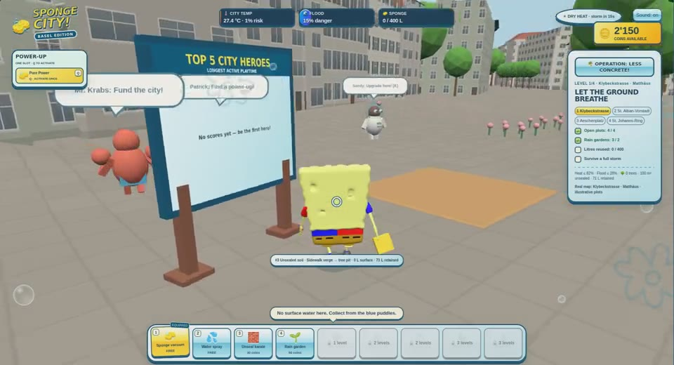
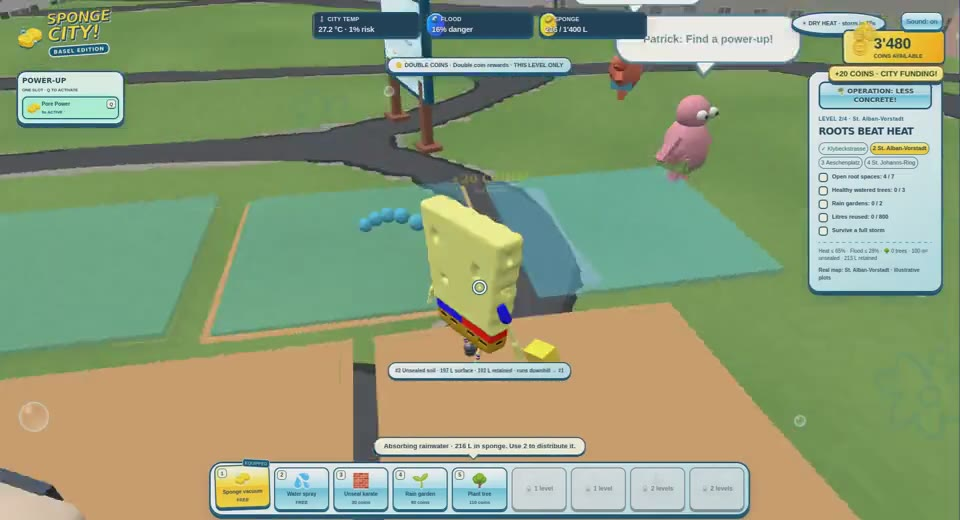
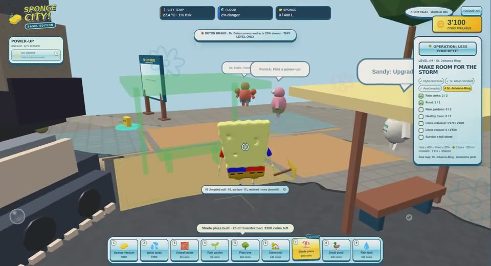
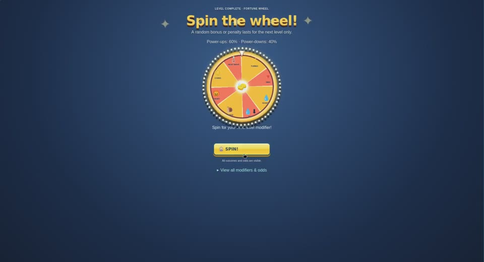
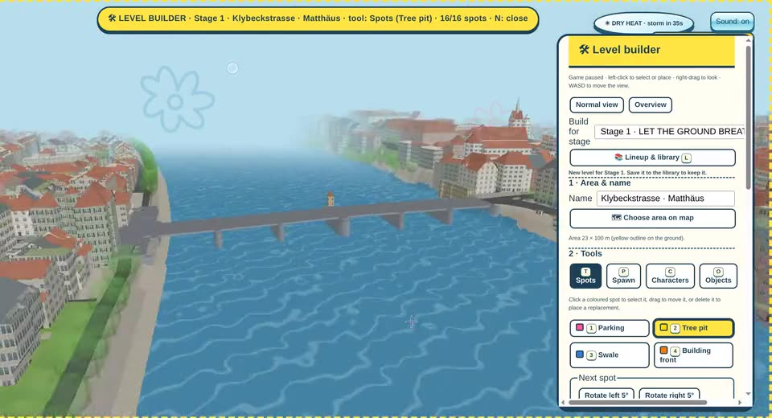
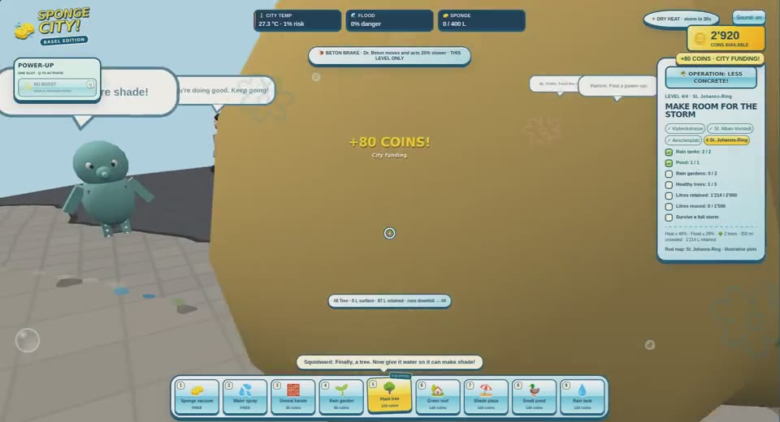

01
Unseal the ground
Turn asphalt into open soil.
Understand
Water needs somewhere to soak in.
Take it outside
Notice paved and planted places near home or school.
Play today. Protect tomorrow.
A playful adventure that helps kids discover how to make a city cooler, greener, and ready for rain.

The problem
Sealed ground sheds rain. Streets without enough trees and greenery have fewer places to cool down.
Background: EPA · Green infrastructure · Urban cooling
The solution
A sponge city absorbs, stores, and reuses rainwater. Trees and greenery bring shade and cooling.
See the real game, then compare it with the teaching diagram.

Meet the villain
The evil concrete villain rolls through the city, resealing open ground and undoing your hard work.
Your mission: stop his machine, reopen the ground, and keep the city green.

Designed to pull kids in
A colorful 3D world where useful actions become part of the fun.
Four story missions, real locations, a familiar hero, and a villain to outsmart.
Boosts, tools, coins, hats, emotes, and a modifier wheel between levels.
Up to 64 players. Endless rounds after the story, with stronger rain and heat.

Try → See the result → Try again
The teaching benefit
Turn asphalt into open soil.
Understand
Water needs somewhere to soak in.
Take it outside
Notice paved and planted places near home or school.
Make room for trees and greenery.
Understand
Shade and plants help cool our streets.
Take it outside
Care for plants and value the trees in your neighborhood.
Build rain gardens, ponds, and tanks.
Understand
Rainwater can be stored and put to use.
Take it outside
Talk with adults about ways to collect rain and water plants.
Learning goals for the prototype · educational impact still needs classroom testing.
Open data. Real places.
Publicly available geodata gives the game real streets, buildings, terrain, trees, and local environmental context.
Map data: Geodaten Kanton Basel-Stadt, swisstopo, GeoBS &
FOEN.
Public access and reuse follow each provider’s terms
and attribution requirements.
Built-in level builder
Because we imported the real map, we can pick any part of Basel included in our export and build a level that fits that exact place.
Select an area on the aerial map of Basel.
Place spots, the start, characters and signs, then test-play right away.
Save it to the team library and pick the levels for the four stages and endless mode.

Why children?
Help kids build the understanding, care, and everyday habits to protect the places they call home.
The next step: play with teachers and kids, see what they learn, and improve together.
Let’s save our city ↗
Sources & honest limits · appendix
Streets
·
Land cover
·
Trees
·
3D buildings
CC BY 4.0 · Quelle: Geodaten Kanton Basel-Stadt.
SWISSIMAGE
·
swissALTI3D: © swisstopo, free use with attribution.
GeoBS heat maps
·
FOEN runoff maps: official public sources; provider terms apply.
Real Basel map anchors; illustrative mission plots, water volumes, temperature values, and risk-ranking heuristics. A learning game, not a climate forecast. Classroom learning impact has not been evaluated. Worldwide locations are a future ambition.
Three.js · MIT. AI-assisted development with Codex and Claude Code. Presentation artwork: original inline SVG/CSS plus short clips from a user-supplied game recording. Named cartoon characters are third-party; supplied model and audio licences need review.
Environmental background: EPA · Types of green infrastructure. Full project source register: docs/SOURCES.md.